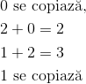
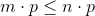
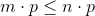
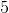
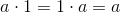

Înmulțirea numerelor naturale
Definiția NN12: Produsul a două numere naturale
Introducem următoarele noțiuni:
- Se numește produs a două numere naturale oarecare
 și
și  unicul număr natural
unicul număr natural  notat .
notat . - Operația prin care se determină produsul a două numere naturale se numește înmulțire.
- și se numesc factorii produsului.
Observație:
Pentru a înmulți două numere este mai simplu să le așezăm unul sub celălalt, ordin sub ordin.
Algoritmul de înmulțire a două numere naturale
Cifra unităților de la al doilea număr se înmulțește pe rând cu fiecare cifră a primului număr, de la dreapta la stânga, trecând rezultatele sub cele două numere, tot de la dreapta la stânga, începând de sub cifra unităților celui de-al doilea număr.
Se ia apoi cifra zecilor de la al doilea număr și se înmulțește pe rând cu fiecare cifră a primului număr, trecând rezultatele dedesubt de rezultatele primei înmulțiri, de la dreapta la stânga, începând de sub cifra zecilor celui de-al doilea număr (cu un spațiu mai la dreapta).
Se ia apoi cifra sutelor de la al doilea număr și se înmulțește pe rând cu fiecare cifră a primului număr, trecând rezultatele dedesubt de celelalte două, începând de sub cifra sutelor celui de-al doilea număr ș.a.m.d.
Continuăm până când se termină cel de-al doilea număr.
Dacă înmulțirile sunt cu trecere peste ordin, se notează doar cifra unităților a numărului obținut prin înmulțire, iar cifra zecilor se adună la următoarea înmulțire.
Rezultatele obținute se adună cifră cu cifră și astfel se obține rezultatul produsului.
Exemplu:
Produsul numerelor  și este:
și este:

Avem:
 ; copiem
; copiem  și ținem minte
și ținem minte  ;
;
 ; adăgăm și obținem ;
; adăgăm și obținem ;
Trecem la a doua cifră a celui de-al doilea factor și avem:
; copiem și ținem minte ;
; adăgăm și obținem ;
Pentru a obține rezultatul:

Rezultatul este  .
.
Proprietățile înmulțirii numerelor naturale
Propoziția NN13: Proprietăți
Fie și  numere naturale oarecare. Înmulțirea numerelor naturale satisface următoarele proprietăți:
numere naturale oarecare. Înmulțirea numerelor naturale satisface următoarele proprietăți:
- comutativitate:
 ;
; - asociativitate: ;
- element neutru: (înmulțind orice număr natural cu
 obținem același număr);
obținem același număr); - distributivitate față de adunare și scădere:
- ;
- ;
- înmulțind orice număr natural cu obținem tot :
 ;
; - dacă
 , atunci ;
, atunci ; - dacă
 , atunci ;
, atunci ; - dacă și , atunci
 ;
; - înmulțirea este o adunare repetată: .
Observație:
Proprietățile precedente se aplică și la produsul mai multor numere naturale.
Observație:
Pentru a înmulți un număr natural cu  , etc. se copiază numărul și se adaugă la sfârșitul lui (la dreapta sa) un zero, două zerouri, trei zerouri etc.
, etc. se copiază numărul și se adaugă la sfârșitul lui (la dreapta sa) un zero, două zerouri, trei zerouri etc.
Exemple:

Înmulțirea numerelor naturale - exemple
- Produsul numerelor și este:

Înmulțim cu  și obținem .
Înmulțim cu și obținem .
Înmulțim cu  și obținem .
și obținem .
Trecem la cifra următoare, care e tot .
Înmulțită cu fiecare din cifrele primului factor, se obțin aceleași rezultate.
Coborâm cifra .
Adunăm cu și obținem  .
.
Adunăm cu și obținem  , iar cifra se coboară.
, iar cifra se coboară.
Rezultatul înmulțirii este .
- Produsul numerelor
 și este:
și este:

 , deci, vom trece
, deci, vom trece  și ținem minte.
și ținem minte.
, la care se adaugă de dinainte și obținem  .
.
Trecem și ținem minte .
 , la care se adaugă de dinainte și obținem
, la care se adaugă de dinainte și obținem  .
.
Trecem și ținem minte  .
.
 , la care se adaugă și obținem .
, la care se adaugă și obținem .
A doua cifră a factorului este ; rezultă că toate înmulțirile vor fi egale cu .
A treia și ultima cifră este .
; vom trece și ținem minte .
, la care se adaugă de dinainte și obținem . Trecem  și ținem minte .
și ținem minte .
 , la care adăugând obținem ; deci, trecem și ținem minte .
, la care adăugând obținem ; deci, trecem și ținem minte .
 , la care adăungând obținem .
, la care adăungând obținem .
Se adună cifrele și obținem rezultatul înmulțirii:  .
.
- Aplicăm proprietățile înmulțirii numerelor naturale din Propoziția NN13:
- Verificăm dacă , și .

- Verificăm dacă și
 .
.

- Verificăm dacă , pentru
 .
.
- Verificăm dacă și
 .
.

- Verificăm dacă și
 .
.
- Verificăm dacă , pentru
 .
.

- Avem:
- Avem:
- Avem:


Factor comun
Într-un exercițiu de calcul, putem avea adunări și scăderi de produse de numere naturale.
Dacă în fiecare produs regăsim același număr, acesta se dă factor comun: se înmulțește numărul respectiv cu o paranteză în care se copiază toți ceilalți factori cu semnele corespunzătoare.
Această metodă poate facilita calculele în anumite exerciții.
Exemple:
- Calculăm, utilizând metoda factorului comun, suma
 .
.
Observăm faptul că factorul comun este  .
.
- Calculăm, utilizând metoda factorului comun, suma
 .
.

În exercițiul anterior, la prima vedere nu exista nici un factor comun. Însă, am observat că în fiecare produs exista un factor care se putea scria ca și produs dintre și un alt număr.
Am rescris termenii respectivi și am obținut în fiecare produs factorul .
Am dat factor comun pe , iar pe ceilalți factori i-am scris într-o paranteză, cu semnele corespunzătoare.
S-a efectuat suma din paranteză, pe care mai apoi am înmulțit-o cu factorul comun.
Este posibil ca în anumite exerciții de calcul, factorul comun să nu fie evident.
De aceea, uneori este necesar să mai efectuăm anumite înmulțiri sau să rescriem anumite numere ca și produs de alte numere, printre care să se regăsească și factorul comun.